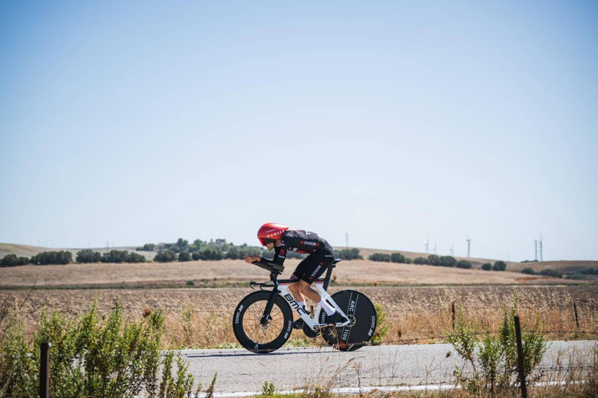
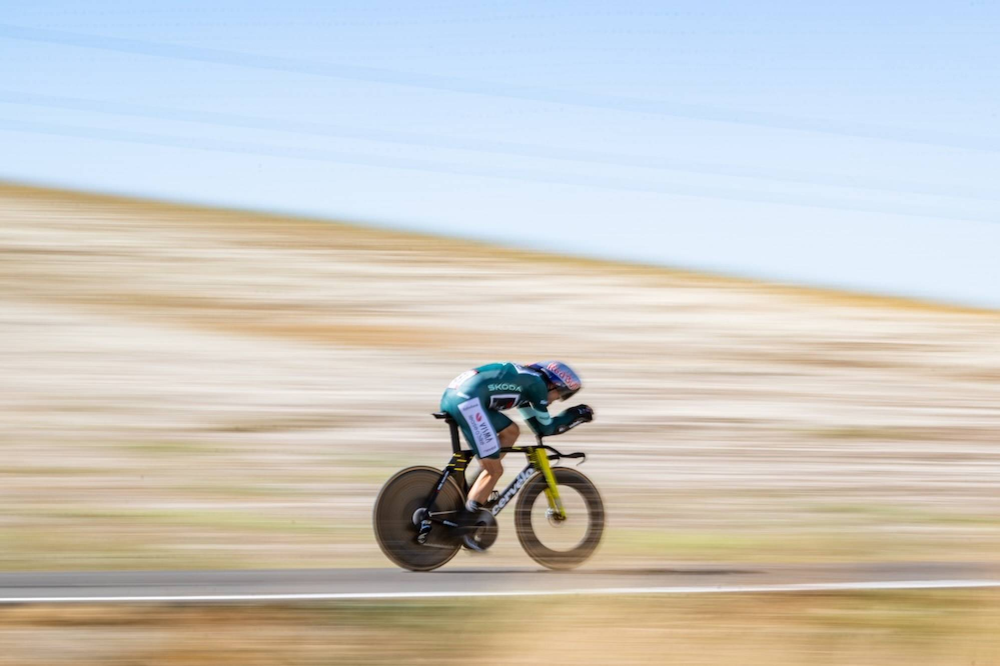
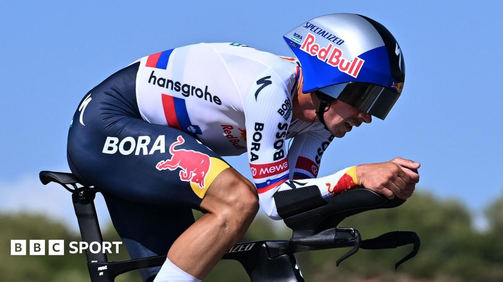

King Küng
10 Sep 2026
Stage 18 ITT, 32.1 km. Küng 35:22, two seconds clear of Thornley.
Friday 11 Sep 2026
Stage 18, Thu 10 Sep: El Puerto de Santa María → Jerez de la Frontera, 32.1 km ITT (~190 m climb). Winner Stefan Küng (Tudor) 35:22; 2. Callum Thornley +0:03; 3. João Almeida +0:09; 4. Primož Roglič +0:19; 5. Wout van Aert +0:20. Mas 12th (~36:15), −33″ to Roglič. Alexis Renard DNS. Flat, hot south-coast roads.
GC: red Mas 60:45:58; Roglič +1:37 (up to 2nd); Gall +3:01; Carapaz +5:17; Onley +6:03 (white, +56″ on Omrzel). Green van Aert 306. Polka Buitrago 69. Tomorrow Stage 19: Vélez-Málaga → Peñas Blancas. Estepona, ~210.8 km, Cat. 1 summit finish (~4,190 m climbing).
The watch was supposed to be Roglič’s claw-back day. He took 22″ by the first check, stretched it to 36″ by the second — then Mas refused to die in the last third and clawed three back. Net: only 33″ lost, 1:37 still in the bank. Gall got cooked (−1:28 to Roglič) and dropped out of the red fight. Stage win went to the specialist: Küng by two seconds over Thornley, who nearly stole a Tudor’s thunder.
Two mountains left before Granada. Peñas Blancas tomorrow is the first real knife. Mas says 1:37 “is not a lot.” He’s right — and still, after the day everyone circled in red ink, he’s the one who looks calmer.

10 Sep 2026
Stage 18 ITT, 32.1 km. Küng 35:22, two seconds clear of Thornley.

10 Sep 2026
+20″ — Visma’s three-stage streak ends, green still his at 306.

10 Sep 2026
33″ clawed back; Gall dropped to +3:01. Peñas Blancas next.